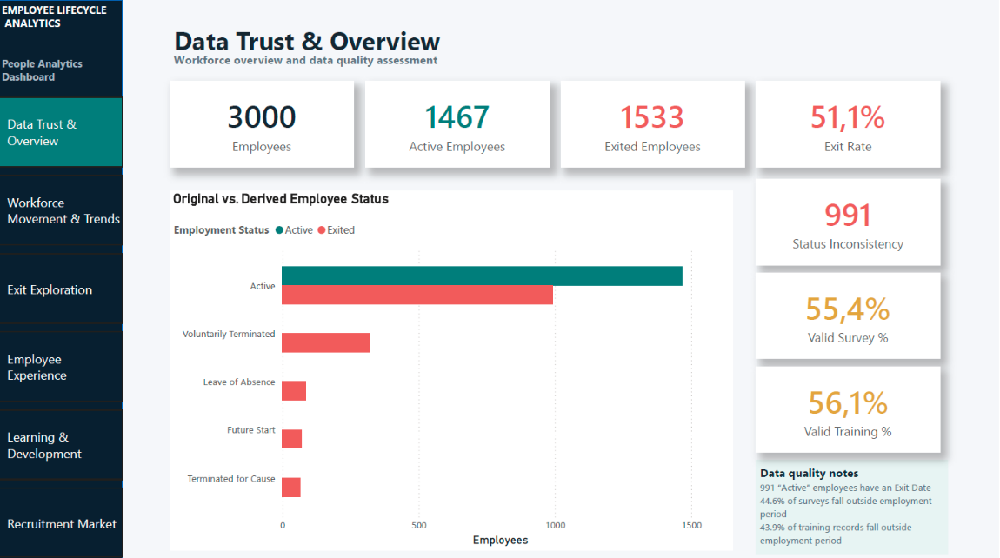
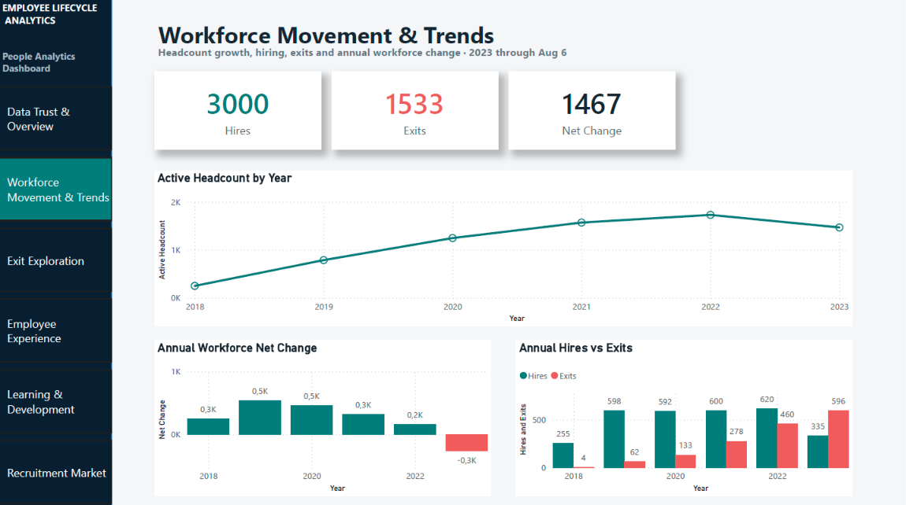
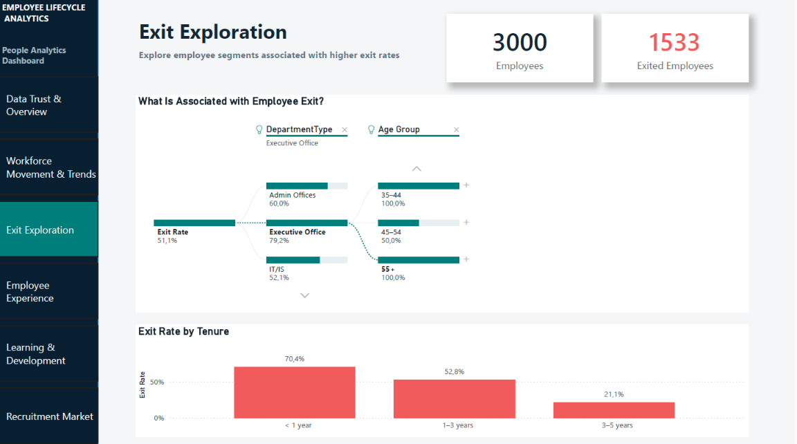
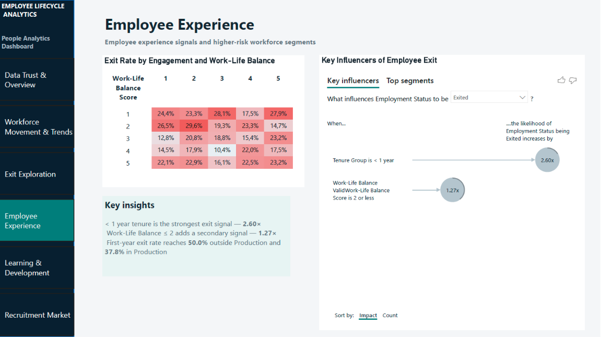
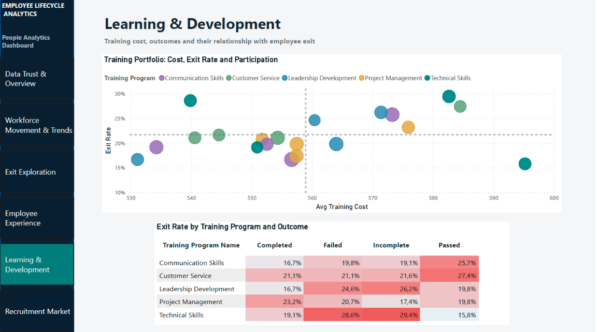
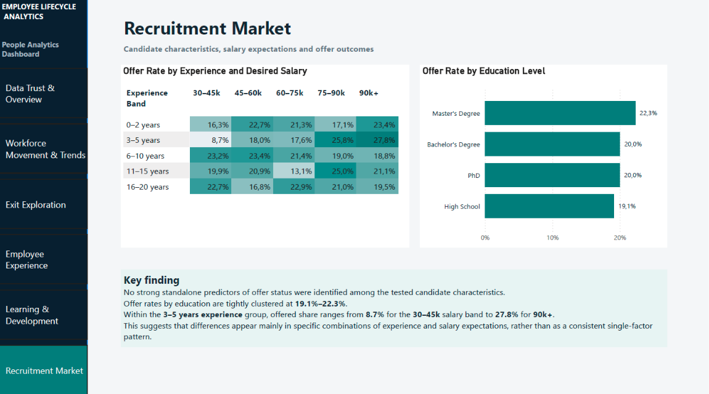

Employee Lifecycle Analytics
What can we learn when workforce, engagement, training and recruitment data are analyzed together — and how much can we trust the underlying data?

A lifecycle view, not an attrition-only dashboard
The project uses one Kaggle HR dataset containing four 3,000-row source tables — employee, engagement survey, training & development and recruitment — across data trust, workforce movement, exits, employee experience, learning & development and recruitment.
The analytical workflow includes SQL-based data-quality auditing, Power Query validation, Power BI modeling, DAX, Decomposition Tree, Key Influencers, heatmaps and segmentation.
Several source fields could not be used at face value
| Issue | Finding |
|---|---|
| Employment status | 991 employees marked Active also had an Exit Date |
| Survey timing | 1 662 valid surveys — 55.4% |
| Training timing | 1 683 valid records — 56.1% |
| Recruitment linkage | No reliable candidate-to-employee key |
A clean employment status was therefore derived from ExitDate. Survey and training records were validated against the employee's employment period and only valid records were used in experience and L&D measures.
The recruitment table remains disconnected. Overlapping IDs and names did not produce a reliable employee link, so the limitation was kept visible instead of forcing a relationship into the model.
Model choices follow the lifecycle logic
The employee table is the central workforce table, with 1:1 relationships to cleaned engagement and training tables. A dedicated date table uses StartDate as the active relationship and ExitDate as an inactive relationship activated in exit measures through USERELATIONSHIP.
Separate measure tables keep workforce, engagement, training, recruitment and data-quality logic organized.
Early tenure dominates, but the pattern changes later
- In the full employee population, employees with less than one year of tenure have a 70.4% exit rate.
- Within the valid-survey population, tenure below one year is the strongest Key Influencers signal at 2.60×.
- Work-Life Balance ≤ 2 is a secondary Key Influencers signal at 1.27×.
- In the valid-survey subset, first-year exit is 50.0% outside Production and 37.8% in Production.
- A later-tenure Production segment with Work-Life Balance ≤ 2 has a 27.6% exit rate across 192 employees versus a 20.5% baseline for the valid-survey population.
The 70.4% first-year rate and the 50.0% / 37.8% segment rates use different analytical populations. They should not be compared as if they had the same denominator.
Context matters more than one headline metric
Training outcomes vary by program rather than moving in one consistent direction. For example, Technical Skills shows 15.8% exit among Passed records versus 29.4% among Incomplete records, while Leadership Development shows 16.7% versus 26.2%. These are associations, not causal claims.
Recruitment is analyzed independently. Offer rates by education are tightly clustered at 19.1%–22.3%, and no strong standalone predictor of offer status was identified among the tested candidate characteristics.
Where the analysis points next
- Prioritize first-year retention analysis across onboarding, manager support, expectations and early feedback.
- Investigate first-year Non-Production exits separately rather than applying one organization-wide explanation.
- Use work-life balance as a context-dependent risk signal alongside tenure and workforce segment.
- Evaluate L&D at Program × Outcome × Retention level.
- Improve HR data architecture with stable IDs, candidate-to-hire mapping, effective-dated status history and temporal validation rules.
Where the data sets the boundary
- Recruitment cannot be reliably linked to employees.
- 2023 is a partial year ending August 6.
- Small segments can produce visually high rates.
- Key Influencers and segmentation identify associations, not causation.
- Training and engagement analyses use only records validated against the employment period.
Six analytical views





Technical details
Tools: MySQL · DBeaver · Power Query · Power BI · DAX.